무선설비기사 (2022-06-25 기출문제)
1과목: 디지털 전자회로
1. 다음 중 정전압 회로에 대한 설명으로 옳은 것은?
- 입력신호의 에너지를 증가시켜 출력 측에 큰 에너지의 변화로 출력하는 회로
- 교류전압을 사용하기 적당한 직류전압으로 변환하여 주는 회로
- 출력 내에 포함되어 있는 리플성분을 제거시켜 정한 크기의 전압을 유지시키는 회로
- 입력전압, 출력부하 전류 및 온도에 상관없이 일정한 직류 출력 전압을 제공하는 회로
(정답률: 85%)

2. 다음 정전압회로에서 제너 다이오드의 내부저항(ra)는 2[Ω]이고, 입력 직렬 저항(RS)는 500[Ω]일 경우 전압 안정계수(S)는 약 얼마인가?
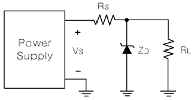
- 0.004
- 0.0⑤
- 0.006
- 0.007
(정답률: 83%)
3. 다음 중 제너 다이오드에 대한 설명으로 틀린 것은?
- 순방향 바이어스 동작은 일반적인 다이오드 특성과 동일하다.
- 역방향 바이어스 영역에서도 안정된 동작을 할 수 있다.
- 특정한 항복전압을 갖는다.
- 온도에 따른 항복전압의 변화가 없다.
(정답률: 70%)
4. 다음 정류회로의 명칭은?
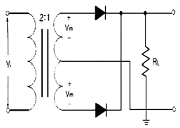
- 단상반파 정류회로
- 3상 반파 정류회로
- 단상전파 정류회로
- 브릿지전파 정류회로
(정답률: 78%)
5. 트랜지스터에 있어 차단상태란 컬렉터 전류 Ic가 어떻게 되는 때를 말하는가? (단, β는 이미터접지시 전류증폭률, IB는 베이스 전류이다.)
- 0
- 1+βIB
- ∞
- βIB
(정답률: 81%)
6. 이미터 접지 증폭기에서 베이스 접지시의 전류증폭률 ɑ=0.8, 이미터전류 IE=12[mA], 컬렉터 누설전류 I㏇=0.1[mA]라면 컬렉터 전류는?
- 4.3[mA]
- 8.5[mA]
- 9.7[mA]
- 10.0[mA]
(정답률: 74%)
7. 다음 그림과 같은 이상적인 증폭기에 대한 설명으로 틀린 것은?
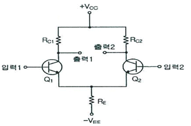
- 전압이득이 무한대이다.
- 입력 임피던스가 무한대이다.
- 온도 드리프트 특성이 없다.
- 동상제거비가 거의 없다.
(정답률: 65%)
8. 다음 중 영 바이어스(Zero bias)된 B급 푸시풀(Push-Pull) 증폭기에서 발생되는 왜곡의 원인으로 가장 적합한 것은?
- 주파수 일그러짐
- 진폭 일그러짐
- 교차 일그러짐
- 위상 일그러짐
(정답률: 65%)
9. 발진주파수 fo=100[MHz], 대역폭이 25[MHz]인 병렬공진회로를 구현할려고 한다. Q는 얼마로 설계해야 하는가?
- 2
- 4
- 6
- 8
(정답률: 88%)
10. 다음과 같은 회로에서 출력 전압은 얼마인가?
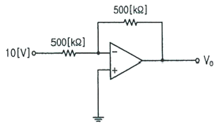
- -5[V]
- -10[V]
- -15[V]
- -20[V]
(정답률: 79%)
11. 게이트와 소스 단자 사이의 전압이 0일 때, 드레인 전류가 상수가 되는 FET의 드레인-소스 단자 사이의 전압은 무엇인가?
- 바이어스 전압
- 핀치-오프 전압
- 컷-오프 전압
- 포화 전압
(정답률: 74%)
12. 다음 중 RC결합 증폭회로의 특징으로 잘못된 것은?
- 비교적 주파수 특성이 좋다.
- 회로가 간단하고 경제적이다.
- 전원 이용률이 우수하다.
- 입력 임피던스가 낮고 출력 임피던스가 높으므로 임피던스 정합이 어렵다.
(정답률: 37%)
13. 다음 전압궤환 바이어스 회로에서 온도상승 등의 외부요인에 의하여 lC가 증가할 때 VCE와 VCB는 각각 어떻게 되는가?
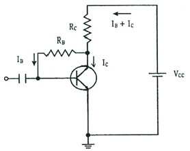
- : 감소, : 감소
- : 감소, : 증가
- : 증가, : 감소
- : 증가, : 증가
(정답률: 56%)
14. QPSK 변조방식의 대역폭 효율은 몇 [bps/Hz]인가?
- 1[bps/Hz]
- 2[bps/Hz]
- 4[bps/Hz]
- 8[bps/Hz]
(정답률: 60%)
15. 다음 그림에서 입력 신호 X가 Y가 어떤 조건을 갖출 때 출력 신호의 값이 1이 되는가?
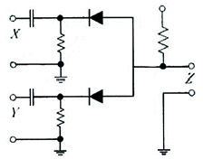
- X=0, Y=0
- X=1, Y=0
- X=0, Y=1
- X=1, Y=1
(정답률: 76%)
16. 다음 논리는 무슨 회로인가?
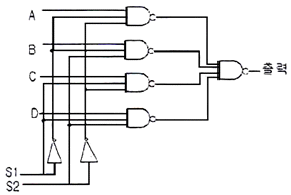
- 멀티플렉서(multiplexer)
- 디멀티플렉서(demultiplexer)
- 인코더(encoder)
- 디코더(decoder)
(정답률: 88%)
17. 다음 진리표를 부울 대수식으로 표시하면?
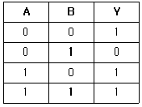
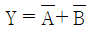
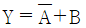
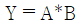
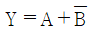
(정답률: 85%)
18. 다음 중 시프트 레지스터 출력을 입력에 되먹임 시킴으로써 클럭 펄스가 가해지면, 같은 2진수가 레지스터 내부에서 순환하도록 만든 카운터는?
- 링 카운터
- 2진 리플 카운터
- 필드코드 카운터
- BCD 카운터
(정답률: 77%)
19. 다음 중 0에서 9까지의 십진수를 표현하는 데 사용되는 2진수 체계는?
- ASCII 코드
- 그레이 코드
- 해밍 코드
- BCD 코드
(정답률: 81%)
20. 다음 그림과 같은 단안정 멀티바이브레이터 회로에서 콘덴서 C2의 역할은 무엇인가?
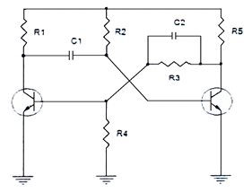
- 스위칭 속도를 빠르게 한다.
- 상태를 저장하는 메모리 기능을 한다.
- 트랜지스터의 베이스 전위를 일정하게 한다.
- 출력 파형의 진폭크기를 결정한다.
(정답률: 73%)
2과목: 무선통신 기기
21. 수신기의 충실도(Fidelity)를 높이기 위해 부궤환을 실시하는 것은 어떤 일그러짐을 개선하기 위한 것인가?
- 비직선 일그러짐
- 주파수 일그러짐
- 위상 일그러짐
- 검파 일그러짐
(정답률: 66%)
22. 다음 중 FM수신기는 AM 수신기와 달리 진폭 제한기(Limier)를 사용하는 이유가 아닌 것은?
- 페인딩이나 잡음 등에 의한 진폭의 변화를 제거하기 위함이다.
- 중간 주파수증폭기의 후단에 접속하여 증폭된 신호의 진폭을 일정하게 한다.
- FM의 경우에 진폭을 제한하여도 수신 중에 혼입된 잡음의 제거가 용이하다.
- 진폭제한기를 사용하여 중심주파수의 이동 현상을 없앤다.
(정답률: 60%)
23. 다음 중 간접FM 송신기의 구성으로 적합하지 않은 것은?
- 수정 발진기
- 위상 변조기
- 완층 증폭기
- 주파수 변별기
(정답률: 65%)
24. 다음 중 진폭 변조(AM)에서 과변조가 일어났을 때의 설명으로 틀린 것은?
- 피변조파에는 많은 고조파가 포함된다.
- 점유대역폭이 넓어진다.
- 과변조된 파를 수신하면 명료도가 저하된다.
- 변조지수가 1이하일 경우에 발생한다.
(정답률: 70%)
25. L입력형 필터 정류기를 사용하다가 이보다 높은 출력전압을 얻기 위해 π형 정류기로 변환하였다. 이때 리플 함유율을 개선하기 위한 방법이 아닌 것은?
- L값을 크게 한다.
- 입력측 C값을 크게 한다.
- RL값을 크게 한다.
- 출력측 C값을 작게 한다.
(정답률: 74%)
26. 정현파 신호의 반송파를 60[%] 진폭변조(AM)한 송신기의 반송파 전력이 600[W]일 경우 피변조파 전력은 얼마인가?
- 908[W]
- 808[W]
- 708[W]
- 608[W]
(정답률: 65%)
27. 다음 중 PM(Phase Modulation) 통신방식에 대한 설명으로 가장 적합한 것은?
- 진폭변조로 인하여 반송파의 상측파대와 하측파대를 함께 전송하는 방식
- 주파수의 폭을 줄이기 위하여 변조 후 나타나는 양측파대 중 단지 하나만 취한 것
- 입력 신호의 진폭에 대하여 반송파의 위상을 변조 신호에 따라 변화시키는 변조 방식
- 진폭변조에서 한쪽의 측파대에 포함되는 변조 신호의 고역에 대응하는 성분을 크게 감쇠시켰을 때의 나머지 부분
(정답률: 84%)
28. 다음 중 DSB-TC 시스템에 대한 설명으로 틀린 것은?
- 2개의 측파대를 가지며 피변조파에 반송파가 포함된다.
- 포락선 검파(Enverlope Detection)방법을 사용해서 복조한다.
- FM방식보다는 SNR이 떨어진다.
- SSB변조에 비해 대역폭을 반만 사용한다.
(정답률: 75%)
29. 다음중 ASK 신호의 복조에 관한 설명으로 틀린 것은?
- ASK신호는 정보비트열로부터 단극성 NRZ신호를 생성하고 DSB변조하여 만들어지므로 아날로그 DSB신호의 복조와 동일한 방법으로 복조할 수 없다.
- 수신신호로부터 기저대역 NRZ 신호를 복구하고, 1과 0의 데이터를 판정한다.
- 기저대역 신호를 복구하는 과정에서는 동기식 검파와 비동기식 검파를 사용할 수 있다.
- 기저대역의 단극성 NRZ 신호로 복구한 뒤에는 정합필터 혹은 상관기를 이용하여 비트를 판정하면 된다.
(정답률: 58%)
30. 다음 그림과 같은 다수의 반송파 주파수를 가지고 변조하는 변조방식과 다중화하는 방식을 바르게 짝지은 것은?
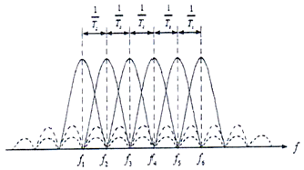
- MFSK – OFDM
- MPSK – OFDM
- MFSK – FDM
- MPSK – TDM
(정답률: 82%)
31. 0 ≦ t ≦ tb의 구간 동안 지속되는 디지털 통신 시스템의 신호 s(t)를 검출하는 정합필터에 대한 설명으로 틀린 것은?
- 필터 출력을 Tb에서 샘플 하였을 때 신호대 잡음비가 최대로 되는 조건을 가진 필터이다.
- 필터의 임펄스 응답 h(t)는 입력신호 파형 s(t)를 시간상 반전시킨 s(-t)를 Tb만큼 지연시킨 s(Tb-t)이다.
- 단순한 곱셈기와 미분기로 구현할 수 있어서 저렴하고 용이하다.
- 임펄스 응답 h(t)와 입력신호 s(t)는 t=Tb(/2)를 축으로 하여 대칭이다.
(정답률: 57%)
32. 통신위성이나 방송위성의 중계기(트랜스폰더)에 사용되는 중계방식은?
- 헤테로다인 중계방식
- 재생 중계방식
- 무급전 중계방식
- 직접 중계방식
(정답률: 69%)
33. 레이다 송신기의 구성 장치 중에서 마그네트론(Magnetron)에 대한 설명으로 가장 적합한 것은?
- 일정한 반복 주기를 가진 직류펄스(Trigger Pulse)를 발생시키는 장치이다.
- 트리거(Trigger) 신호에 의하여 짧고 강력한 펄스 형태의 전파를 발생시키는 장치이다.
- 직류 펄스를 펄스폭이 0.1~1[㎲]인 펄스 전압으로 바꾸어 레이다 펄스폭을 결정하는 장치이다.
- 스캐너를 통하여 받은 물표의 반사 신호를 증폭시켜 영상 신호로 바꾸어 지시기에 보내는 장치이다.
(정답률: 68%)
34. 다음 중 GPS(Global Positioning System)를 이용하여 위치 측정 시 발생하는 거리오차가 아닌 것은?
- 위성 시계의 오차
- 위성 궤도의 오차
- 온도 상승의 오차
- 다중경로에 의한 오차
(정답률: 85%)
35. 다음 중 선박의 안전운항을 위하여 필요한 관련 장비 및 도구에 적합하지 않은 것은?
- AIS
- LRIT
- SSAS
- DME
(정답률: 62%)
36. 다음 중 GMDSS(Global Maritime Distress and Safety System) 통신 장비에 속하지 않는 것은?
- INMARSAT
- FACSIMILE
- NBDP
- NAVTEX
(정답률: 51%)
37. 측정물의 작용에 의하여 계측기의 지침이 변위를 일으켜, 이 변위를 눈금과 비교하여 측정치를 얻는 측정방식은 무엇인가?
- 편위법
- 영위법
- 보정법
- 치환법
(정답률: 78%)
38. 수신기 특성 중 1신호 선택도의 종류에 해당되지 않는 것은?
- 감도 억압 효과
- 근접 주파수 선택도
- 영상 주파수 선택도
- Spurious Response
(정답률: 68%)
39. 다음 중 상호변조(Intermodulation)의 방지대책에 대한 설명으로 틀린 것은?
- 증폭기를 비선형 영역에서 동작시키지 않는다
- 필터를 이용하여 통과대역 밖의 신호를 잘라낸다.
- 다중화 방식으로 FDM(Frequency Division Multiplexing)을 사용한다.
- 입력신호의 레벨을 너무 크게 하지 않는다.
(정답률: 68%)
40. 송신기에 안테나 대신 16[Ω]의 무유도 저항을 연결한 후, 측정한 전류값이 5[A]일 경우 송신기의 출력 값은 얼마인가?
- 300[W]
- 400[W]
- 500[W]
- 600[W]
(정답률: 68%)
3과목: 안테나 공학
41. EN 개의 금속판을 마주보게 놓고 전압을 인가했을 때 극판 사이의 전속밀도(D)는 얼마인가? (단, 극판에 축적된 전하를 Q[C], 극판 면적을 S[m2], 극판 사이의 유전율을 ε[F/m]라 한다.)
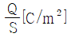
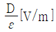
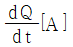
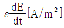
(정답률: 70%)
42. 다음 회절파에 대한 설명으로 틀린 것은?
- 제1프레넬(Fresnel) 반경은 제2프레넬(Fresnel) 반경보다 작다.
- 프레넬(Fresnel) 반경은 파장에 따라 변한다.
- 송수신점간의 중앙에 산악이 있을 때에 회전손실이 최대가 된다.
- 클리어런스(Clearance) 계수는 제1프레넬(Fresnel) 반경에 반비례한다.
(정답률: 64%)
43. 다음 중 지상에 수직으로 설치된 송수신 안테나간의 거리가 충분히 멀고, 낮은 초단파대 주파수를 사용하는 경우에 수신 전계에 대한 설명으로 틀린 것은?
- 안테나에 흐르는 전류에 비례한다.
- 안테나의 실효고에 비례한다.
- 송수신 안테나 간의 거리에 반비례한다.
- 송신 안테나의 높이에 비례한다.
(정답률: 58%)
44. 다음 중 신틸레이션(Scintillation) 페이딩에 대한 설명으로 틀린 것은?
- 대기 중 공기의 와류에 의한 직접파와 산란파의 간섭으로 발생한다.
- 수신 전계강도의 평균 레벨은 페이딩에 의해 변동이 심하다.
- 겨울보다 여름에 많이 발생한다.
- AGC(Automatic Gain Control)를 이용하여 방지할 수 있다.
(정답률: 57%)
45. 100[MHz]의 신호를 송신안테나를 통해 100[km] 떨어진 수신 안테나로 전송할 때 자유공간 전파 손실은 얼마인가?
- 92.45[dB]
- 102.45[dB]
- 112.45[dB]
- 122.45[dB]
(정답률: 66%)
46. 다음 중 전파의 성질에 대한 설명으로 옳지 않은 것은?
- 송신측에서 수직 다이폴을 사용하면 수신측에서도 수직편파 테나를 사용하여야 한다.
- Snell의 법칙은 매질의 경계면에서 일어나는 회절현상을 분석할 때 사용한다.
- 도체에 전파가 진입할 때의 감쇠되는 정도는 표피작용의 깊이 (Skin Depth)로 알 수 있다.
- 주파수가 높을수록 직진성이 강하고 낮을수록 회절이 잘 된다.
(정답률: 69%)
47. 다음 중 평면파와 구면파에 대한 설명으로 틀린 것은?
- 평면파는 구면파보다 도달거리가 짧다.
- 안테나로부터 원거리에서는 평면파로 간주하여도 된다.
- 전계와 자계성분이 서로 직각이다.
- 자유공간에서의 속도는 광속과 같다.
(정답률: 53%)
48. 겉보기 높이가 h이고, 사용 주파수가 임계주파수의 2배일 때, 도약 거리는 h의 몇 배 인가?
- √2배
- 2√2배
- √3배
- 2√3배
(정답률: 57%)
49. 어떤 전리층의 임계 주파수가 6[MHz]로 측정되었다. 이 전리층의 최대 전자밀도는?
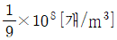
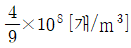
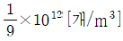
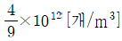
(정답률: 65%)
50. 다음 중 동축 극전선의 특징으로 맞는 것은?
- SHF대역에서는 유전체 손실이 감소한다.
- TEM 모드의 전송이 가능하다.
- Stub에 의해 정합이 이루어진다.
- 평형형 급전선이다,
(정답률: 50%)
51. 다음 중 안테나의 정합회로에 해당되지 않는 것은?
- 전력 분배회로
- 테이퍼 선로
- T형 정합회로
- Y형 정합회로
(정답률: 64%)
52. 다음 중 정재파에 대한 설명으로 틀린 것은?
- 진행파와 반사파가 합성된 파를 말한다.
- 전압 분포상태가 (λ/2)거리마다 최대치가 있다.
- 급전선의 특성 임피던스와 부하의 임피던스가 정합되어 있을 때 발생한다.
- 진행파와 비교할 때 전송손실이 크다.
(정답률: 69%)
53. 다음 설명의 괄호 안에 맞는 말을 순서대로 배열한 것은?
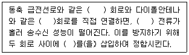
- 불평형 – 평형 – 평형 – 결합기(Stub)
- 불평형 – 평형 – 불평형 – 발룬(Balun)
- 평형 – 불평형 – 평형 – 결합기(Stub)
- 평형 – 불평형 – 불평형 – 발룬(Balun)
(정답률: 77%)
54. 다음 중 마이크로파의 전송선로로서 도파관을 사용하는 이유로 가장 적합한 것은?
- 취급전력이 작고 방사손실이 없다.
- 유전체 손실이 적다.
- 부하와의 정합상태가 불량하여도 정재파가 발생하지 않는다.
- 저역 여파기(LPF) 역할을 한다.
(정답률: 73%)
55. 전계강도가 100[mV/M]인 지점에 길이 75[m]의 수직접지안테나를 설치하였을 때 안테나에 유기되는 최대 유기 기전력은 약 얼마인가?(단, 사용주파수는 1[MHz]이다.
- 9.5[V]
- 4.8[V]
- 3.7[V]
- 2.4[V]
(정답률: 59%)
56. 고출력 전자파(Electromagnetic Pulse, EMP) 방사성 차폐성능 측정 환경을 구성하여 측정한 결과 기준값 전압이 100[mV]이고, 시험값 전압이 [1mV]이다. 차폐성능(SE)는 얼마인가?
- 10[dB]
- 20[dB]
- 30[dB]
- 40[dB]
(정답률: 45%)
57. 전자파 적합성(EMC)에서 전자파 장해문제 발생의 3요소가 아닌 것은?
- 결합경로(coupling path)
- 감응체(susceptor)
- 장해원(emitter)
- 차폐(shielding)
(정답률: 65%)
58. 다음 중 전자파 발생원으로부터의 불필요한 잡음(Noise)을 제거 또는 억제하는 방법에 해당되는 것을 모두 고르시오.
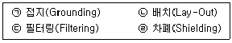
- ㉠, ㉡
- ㉠, ㉢
- ㉡, ㉢, ㉣
- ㉠, ㉡, ㉢, ㉣
(정답률: 64%)
59. 다음 중 심굴 접지의 용도로 적합한 것은?
- 소전력의 송신 안테나에 사용된다.
- 충파 방송용 안테나에 사용된다.
- 대전력용 방송국에 사용된다.
- 중전력의 단파용 송신 안테나에 사용된다.
(정답률: 64%)
60. 60[Mhz] 전용의 3소자 야기안테나를 설계하려고 한다. 이 때 고려해야 할 값으로 틀린 것은?
- 도파기의 길이 : 2.4[m]
- 소자간의 간격 : 2.5[m]
- 투사기의 길이 : 2.5[m]
- 반사기의 길이 : 2.6[m]
(정답률: 58%)
4과목: 무선통신 시스템
61. 다음 중 디지털 통신에서 펄스 성형(pulse shaping)을 하는 주된 이유로 가장 적합한 것은?
- 노이즈를 줄이기 위함
- 다중접속을 용이하게 하기 위함
- 심볼간 간섭(ISI)을 줄이기 위함
- 채널 대역폭을 증가시키기 위함
(정답률: 72%)
62. 다음 중 18[kHz]까지 전송할 수 있는 PCM(Pulse Code Modulation)시스템에서 요구되는 표본화 주파수로 적합한 것은?
- 9[kHz]
- 18[kHz]
- 30[kHz]
- 36[kHz]
(정답률: 68%)
63. 다음 중 VSAT(Very Small Aperture Terminal)의 특징이 아닌 것은?
- 소형 출력과 소형 안테나를 갖는 위성통신용 지상 장치이다.
- 설비가 간단하며, 고속 데이터통신용에 사용한다.
- 12~18[GHz] 주파수를 사용, 안테나의 이득이 크다.
- HUB Station을 사용하여 위성과 연결함으로써 VSAT와 VSAT 사이의 통신이 가능하다.
(정답률: 66%)
64. 다음 중 멀티빔(Multi Beam) 위성 통신 방식에 대한 설명으로 틀린 것은?
- 전송용량을 증대시킬 수 있다.
- Single Beam 방식에 비해 위성 안테나의 제어가 쉽다.
- 주파수를 유효하게 이용할 수 있다.
- 지구국 수신 안테나를 소형으로 할 수 있다.
(정답률: 74%)
65. 다음 중 위성 통신에 사용하는 위성 안테나의 기능이 틀리게 연결된 것은?
- 혼 안테나: 원형이나 직사각형의 도파관의 끝을 나팔 모양으로 넓힌 안테나로서 넓은 지역을 커버하는 안테나
- 무지향성 안테나: 모든 방향으로 고르게 전자기파를 복사하는 안테나
- 파라볼라 안테나: 전파의 반사면에 포물면을 사용한 지향성 안테나로서 좁은 지역을 커버하는 안테나
- 패치 안테나: 위성지구국안테나로서 고이득, 저잡음 안테나이며 송수신 시설과 1차 복사기가 직접 연결되어 급전손실이 적은 안테나
(정답률: 61%)
66. 다음 중 위성통신의 다원접속방식 중 넓은 대역폭이 소요되어 주파수의 이용효율은 낮으나 간섭 및 잡음에 가장 강한 방식은?
- 시분할 다원접속(TDMA)
- 공간분할 다원접속(SDMA)
- 부호분할 다원접속(CDMA)
- 주파수분할 다원접속(FDMA)
(정답률: 58%)
67. 다음 중 서비스 지역내의 통화 용량(트래픽 처리용량)을 증가시키기 위한 방법으로 적합하지 않은 것은?
- 기지국의 채널 증설
- 추가 주파수 스펙트럼 사용
- 동적 주파수 할당
- 셀 크기를 크게 구성
(정답률: 70%)
68. 초고속 해상무선 통신망(LTE-Maritime)에서 한국형 e-Navigation서비스의 우리나라 연안 통신 커버리지는 대략 얼마인가?
- 50[km]
- 100[km]
- 150[km]
- 200[km]
(정답률: 55%)
69. 노트북 컴퓨터와 PDA, 디지털카메라, 휴대폰 등의 대중화에 따라 주로 짧은 거리에서 적외선을 이용하는 무선데이터통신시스템으로 홈네트워킹 무선기술에서 중요한 역할을 하는 것은?
- Bluetooth
- Home-RF
- IrDA
- VoIP
(정답률: 63%)
70. 다음 중 MIMO (Multi-Input Multi-Output) 기술을 사용하여 전송속도를 증가 시킨 규격은 무엇인가?
- IEEE 802.11a
- IEEE802.11b
- IEEE 802.11g
- IEEE 802.11n
(정답률: 64%)
71. 무선 LAN에서 단말기 상호 간 무선구간에서의 충돌 방지를 위해 사용하고 있는 MAC 방식은?
- CSMA/CD
- CSMA/CA
- TOKEN BUS
- TOKEN RING
(정답률: 78%)
72. 다음 중 Wi-Fi 세대별 해당하는 기술 규격이 틀린 것은?
- Wi-Fi 3: 802.11g
- Wi-Fi 4: 802.11n
- Wi-Fi 5: 802.11a
- Wi-Fi 6: 802.11ax
(정답률: 72%)
73. IEEE에 의한 무선 LAN은 OSI 7계층 구조상 어느 부분에 대한 규격을 정의하고 있는가?
- 데이터 링크 계층과 네트워크 계층
- 물리 계층과 데이터 링크 계층
- 네트워크 계층과 전송 계층
- 전송 계층과 세션 계층
(정답률: 50%)
74. 다음 중 2개의 프로토콜 개체(Entity)가 초기의 시작, 중간의 체크 포인트 기능, 통신 종료 등을 수행할 수 있도록 두 개체를 같은 상태로 유지시키는 프로토콜 기능은?
- 동기화(Synchronization)
- 순서결정(Sequencing)
- 주소지정(Addressing)
- 다중화(Multiplexing)
(정답률: 68%)
75. 다음 중 정보 통신 표준의 분류에 있어 강제력, 발효 시기에 따른 분류에 해당하는 것은?
- 임의(권고) 표준
- 지역 표준
- 기능표준
- 시험표준
(정답률: 68%)
76. 다음 중 무선통신 실시설계의 산출물로 적합하지 않은 것은?
- 공사비 산출서
- 설계 계획서
- 실시설계 도서
- 설계 계산서
(정답률: 72%)
77. 다음 중 무선통신설비의 동작계통, 시스템의 연결 및 단말기의 접속에 관련된 내용을 표시하는 설계도서는?
- 계통도
- 배관도
- 배선도
- 상세도
(정답률: 75%)
78. 무선 RF특성 측정을 위해 사용하는 측정기가 아닌 것은?
- Spectrum Analyzer
- Signal Generator
- Network Analyzer
- OTDR(Optical Time-Domain Reflectometer
(정답률: 64%)
79. 통신시스템의 통합 시험을 하기 위한 준비과정으로 틀린 것은?
- 통합시험 시스템의 개략적인 통합시험 구성도를 준비한다.
- 장비 공급사에서 제공하는 시스템의 연동 규격을 숙지한다.
- 각 모듈 단위에서의 분석된 시험결과를 참고하지 않고 통합시험 결과만 반영한다.
- 시험 대상 장비의 목록 및 외관 상태를 파악하여 정리한다.
(정답률: 77%)
80. 장비의 단위시험 결과 보고서를 작성할 때 포함되는 항목으로 거리가 먼 것은?
- 펌웨어 업데이트
- 시험결과 분석
- 측정자
- 시험 측정방법
(정답률: 74%)
5과목: 전자계산기 일반 및 무선설비기준
81. 다음 중 동적 RAM(Dynamic RAM)의 특징에 대한 설명으로 틀린 것은?
- 전하의 양을 측정하여 저장 논리 값을 판단한다.
- 전하의 방전 때문에 주기적으로 재충전(Refresh)해야 한다.
- 1비트를 구성하는 소자가 적어서 단위 면적에 많은 저장장소를 만들 수 있다.
- 1비트를 구성하는 소자가 적어서 메모리 액세스 속도가 정적 RAM(Static RAM)보다 빠르다.
(정답률: 77%)
82. 다음 중 중앙처리장치(CPU)의 기능이 아닌 것은?
- 명령어 생성(Instruction Create)
- 명령어 인출(Instruction Fetch)
- 명령어 해독(Instruction Decode)
- 데이터 인출(Data Fetch)
(정답률: 61%)
83. 다음 그림과 같이 모든 모듈들이 한 개의 시스템 버스를 공유하고 있다. 100개의 워드를 DMA를 이용하여 주기억장치에서 1개의 I/O장치로 전송하고자 할 때 인터럽트의 횟수와 버스요청(bus request)횟수는 얼마인가? (단, 모든 장치는 정상적으로 작동하는 것을 가정한다.)
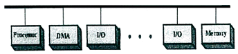
- 인터럽트 1회, 버스 요청 1회
- 인터럽트 100회, 버스 요청 100회
- 인터럽트 1회, 버스 요청 200회
- 인터럽트 100회, 버스 요청 200회
(정답률: 51%)
84. 다음 중 운영체제에 대한 설명으로 틀린 것은?
- 2개의 운영체제를 한 컴퓨터에서 운영하려면 반드시 가상머신이 필요하다.
- 컴퓨터 시스템들의 자원을 효율적으로 관리하여 시스템의 성능을 최적화 한다.
- 자바가상머신(JVM)은 자바코드만을 실행하기 위한 것이다.
- 안드로이드(Android)는 리눅스의 커널(Kernel)을 사용한다.
(정답률: 58%)
85. UDP(User Datagram Protocol)에 대한 설명으로 틀린 것은?
- 비연결형 프로토콜이다.
- 복구 기능을 제공하지 않는다.
- 데이터 전달의 신뢰성을 확보한다.
- 수신된 데이터의 순서 재조정 기능을 지워하지 않는다.
(정답률: 53%)
86. 다음 중 시스템에 접근하는 침입자를 오래 머물게 하여 추적이 가능하게 하므로 능동적으로 방어할 수 있고, 침입자의 공격을 차단할 수 있다는 장점으로 인해 많이 활용되는 침임탐지 기술은?
- Spoofing
- Honeypot
- Sniffing
- Switching
(정답률: 60%)
87. 10진수 43과 이진수 10010011의 논리합(OR)를 맞게 변환한 값은?
- 10111011
- 10111000
- 10111110
- 10111111
(정답률: 60%)
88. 데이터 정제에서 오류 우선 순위가 낮게 분류되었기 때문에 오류 수정을 연기한 상태를 나타내는 용어는?
- Closed
- Assigned
- Deferred
- Classified
(정답률: 72%)
89. 사용자가 서비스제공자로부터 가상화된 형태의 CPU, 주기억장치, 보조기억장치, 네트워크 등을 제공받아 컴퓨팅 자원을 직접적으로 제어할 수 있는 형태로 제공받는다. 사용자는 제공받은 컴퓨팅 자원을 통해 운영체제, 스토리지, 어플리케이션 등 자유롭게 활용하여 제3의 사용자에게 제공할 수 있는 서비스는 무엇인가?
- PaaS
- SaaS
- IaaS
- NaaS
(정답률: 52%)
90. VPN에서 사용하는 프로토콜이 아닌 것은?
- L2TF
- IPSec
- FTP
- SSL
(정답률: 52%)
91. 다음 중 전파감시 업무를 수행하는 이유로 타당하지 않은 것은?
- 전파의 효율적 이용 촉진
- 혼선의 신속한 제거
- 무선국의 원활한 검사
- 전파이용질서의 유지 및 보호
(정답률: 71%)
92. 전파자원의 공평하고 효율적인 이용을 촉진하기 위하여 과학기술정보통신부장관은 주파수 이용현황의 조사 확인을 어느 기간 마다 실시해야 하는가?
- 매년
- 2년
- 5년
- 허가 기간 만료시
(정답률: 55%)
93. 다음 중 용어의 정의를 잘못 설명한 것은?
- '우주국'이란 우주에 개설한 무선국을 말한다.
- '주파수분배'란 특정한 주파수의 용도를 조작하는 자의 총체를 말한다.
- '무선국'이란 무선설비와 무선설비를 조작하는 자의 총체를 말한다.
- '전파'란 인공적인 유도 없이 공간에 퍼져나가는 전자파로서 국제전기통신연합이 정한 범위의 주파수를 가진 것을 말한다.
(정답률: 60%)
94. 무선방위측정장치 보호구역에 전파를 방해할 우려가 있는 건축물 등을 건설하려는 경우 승인을 얻어야 할 건조물 또는 공작물에 해당하지 않는 것은?
- 무선방위측정장치의 설치장소로부터 500미터 이내의 지역에 매설하는 수도관
- 무선방위측정장치의 설치장소로부터 500미터 이내의 지역에 매설하는 가스관
- 무선방위측정장치의 설치장소로부터 1킬로미터 이내의 지역에 건설하고자 하는 송신안테나
- 무선방위측정장치의 설치장소로부터 1킬로미터 이내의 지역에 매설하는 통신용 케이블
(정답률: 69%)
95. 과학기술정보통신부장관이 전파자원을 확보하기 위해 시책을 수립 시행하여야 할 내용과 거리가 먼 것은?
- 새로운 주파수의 이용기술개발
- 이용중인 주파수의 이용효율 향상
- 무선국간 혼신방지를 위한 조치강화
- 주파수의 국제등록
(정답률: 23%)
96. 기지국을 재허가 받고자 하는 자는 과학기술정보통신부장관에게 재허가 신청을 언제하여야 하는가?
- 허가의 유효기간 만료 전 2개월 이상 4개월 이내
- 허가의 유효기간 만료 전 3개월 이상 4개월 이내
- 허가의 유효기간 만료 전 4개월 이상 6개월 이내
- 허가의 유효기간 만료 전 2개월 이상 3개월 이내
(정답률: 57%)
97. 무선설비의 안테나계는 어떤 안전시설을 설치하여야 하는가?
- 절연체와 절연차폐체
- 절연저항 시험기
- 충전기구와 방전기구
- 낙뢰보호장치 및 접지시설
(정답률: 76%)
98. 방송통신기자재 등의 적합성평가 표시기준으로 볼 수 없는 것은?
- 적합인증 표시
- 제조공정적합 표시
- 적합등록 표시
- 잠정인증 표시
(정답률: 57%)
99. 다음 중 첨두포락선전력을 안테나공급 전력으로 표시하지 않는 전파 형식은?
- A1A
- A1B
- A2A
- A3E
(정답률: 66%)
100. 406[MHz]에서 406.1[MHz]까지의 주파수의 G1B전파를 사용하는 위성비상위치지시용 무선표지설비의 기술기준 중 전지의 용량은 당해 송신설비를 연속하여 몇 시간 이상 작동할 수 있어야 하는가?
- 8시간
- 12시간
- 24시간
- 48시간
(정답률: 59%)